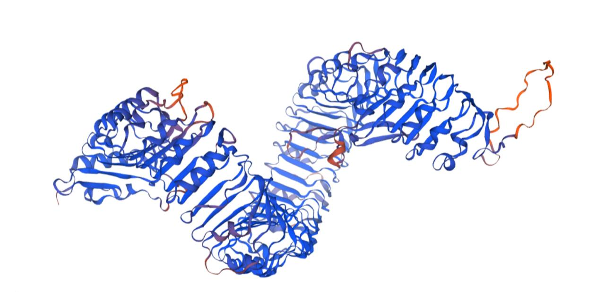
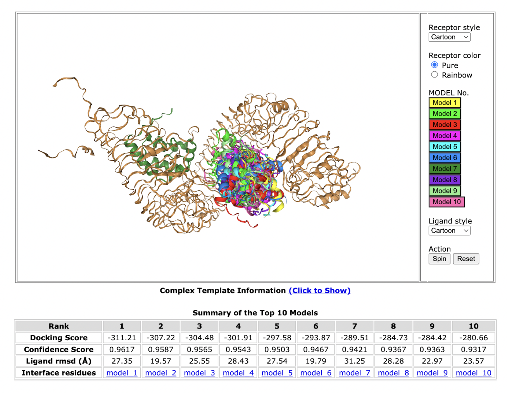

Introduction
To complement our experimental work, we employed computational tools
to analyze the ELR protein from Solanum microdontum. Using
bioinformatics and structural modeling, we identified the
extracellular binding domain responsible for detecting INF1 from
Phytophthora capsici. Our goal was to engineer a version of
ELR that could be expressed in Bacillus subtilis for use in a
biosensor system.
Structural Modeling of ELR
To ensure the proper folding and function of the extracellular ELR
domain, we modeled its structure using:
-
SwissModel: Predicted the 3D structure with high
confidence.
-
Phyre2: Provided secondary structure validation through
homology modeling.

The structural model confirms the presence of leucine-rich repeats
(LRRs), ensuring binding compatibility with INF1.
Molecular Docking with INF1
To validate the interaction between ELR and INF1, molecular docking
simulations were performed using AutoDock Vina.
Docking Results
| Model |
Docking Score |
Confidence Score |
Binding Energy (kcal/mol) |
| Model 1 |
-324.72 |
0.9705 |
-9.3 |
| Model 2 |
-317.07 |
0.9658 |
-8.7 |
These docking results indicate strong binding affinity between ELR
and INF1, validating our engineered receptor’s functionality.
